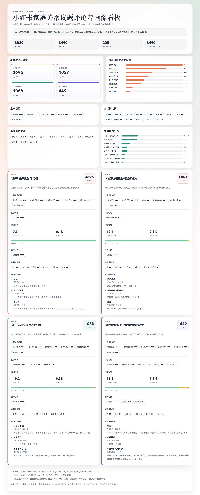

1
头像问题起点
先提出“头像风格 -> 自我呈现 -> 评论表达 -> 议题角色”的链路，同时划清头像不能直接推人格。
Codex Skill / Social User Profile Universe
把小红书、知乎、飞书表格里的评论数据，跑成评论层标注、用户层画像、看板和汇报材料。
不是“给人贴几类标签”，而是一套可复用的分类空间和判定规则。
它规定评论应该先看什么、怎么分层、哪些边界不能越过。面对新评论时，不是临时发明人群名，而是把样本放回同一张地图里比较。
规定有哪些位置：关系心理、结构制度、实务程序、轻互动元评论。
先判主功能，再判关键词；D3 必须有路径；D4 只收轻互动。
区分单条评论角色和用户稳定倾向。单次发声不直接写成稳定人格。
底层保留 D/S/H/M 码，对外展示更好懂的人群名。
汇报时可以直接用这页解释 D1-D4、典型评论和边界规则。
| 大域 | 名称 | 核心分支 | 示例评论 | 适合放入的评论 | 边界规则 |
|---|---|---|---|---|---|
| D1 | 关系-心理域 | S1/S2/S3/S4/S5/S6/S7 | “这不是孩子突然变差，是长期被控制后的反应。” | 解释亲子关系、边界、创伤、现实成本、责任规则、真假专家。 | S6 不是兜底；能归具体分支时优先归具体分支。 |
| D2 | 结构-制度域 | S8a/S8b/S8c/S8d | “学校制度、升学压力和资源差距都在推着孩子走。” | 解释学校、组织、平台、阶层资源、性别分工和系统性困境。 | 重点不是个人动机，而是制度/资源约束时进入 D2。 |
| D3 | 实务-程序域 | H1/H2/H3/H4/H5 | “先去正规医院评估，再和学校沟通减压方案。” | 给出明确处理路径，如法律、医疗、沟通、学业、资源配置。 | 必须有“怎么做”；泛泛建议不进 D3。 |
| D4 | 轻互动-元评论域 | M1/M2/M3/M4 | “太真实了，我家也是这样，看评论区已经破防了。” | 主功能是附和、元评论、纠错、玩梗和气氛型互动。 | 长评论或含实质论证的，不因为开头附和就进 D4。 |
L1 只说明这一条评论在讨论中扮演什么功能；L2 聚合后才判断主画像和稳定性；头像只表示账号如何呈现自己。
从真实评论、头像讨论、人工复核和撞类回改里逐轮沉淀。
先提出“头像风格 -> 自我呈现 -> 评论表达 -> 议题角色”的链路，同时划清头像不能直接推人格。
拿评论和头像做 20/40 条样本演示，观察原型能否覆盖真实表达。
从几类人扩成 D1-D4 大域和 S/H/M 分支，补现实规范、结构制度、方法路径和轻互动。
用知乎“孩子”评论筛出画像子集，验证跨平台、跨问题标题复用。
各抽 20 条复核，修正长评论误进轻互动、泛建议误进方法类等边界。
沉淀平台路由、画像宇宙、命名规则、头像边界、输出清单和固定跑法。
611 条评论、508 个用户、33 个问题标题进入 V3.1 画像分析。
134 个用户 / 160 条评论。把孩子问题理解为家庭失衡、依恋创伤、控制关系或长期忽视。
114 个用户 / 135 条评论。先站队、先表态，快速放大委屈、愤怒、心疼或认同。
122 个用户 / 144 条评论。关注养育成本、婚育代价、家庭责任、规则边界和反泛化。
138 个用户 / 172 条评论。推进到怎么办，或放回学校制度和资源结构解释。
数据源：/Users/lulu/AIWork/output/zhihu_haizi_comments_20260424.csv
可以直接喂小红书原始爬虫表，也可以喂知乎评论表。
/Users/lulu/AIWork/output/xhs_20260424_topfix/merged_comments.xlsx
/Users/lulu/AIWork/output/zhihu_haizi_comments_20260424.csv
/Users/lulu/AIWork/.codex/skills/social-user-profile-universe/SKILL.md
评论层标注表、用户画像表、HTML 看板、长图、PDF。
用 social-user-profile-universe 这个 skill，分析这批评论，输出画像表和可视化。
作为最后一页收口，回到这套框架的完整落点。
